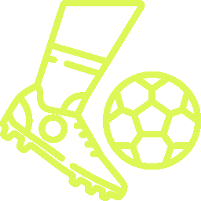

Información del Curso
El curso de Analista Táctico de Fútbol es una oportunidad única para sumergirse en el fascinante mundo del fútbol desde una perspectiva estratégica y táctica.
¿Por qué Elegir Este Curso?
Nuestro programa se destaca por:
- Profesorado experimentado compuesto por entrenadores y analistas tácticos reconocidos.
- Enfoque práctico con proyectos reales y análisis de partidos en vivo.
- Acceso a herramientas de análisis táctico utilizadas por profesionales.
- Red de alumnos y oportunidades de networking en la industria del fútbol.
Temas Destacados
Exploraremos temas clave, como:
- Desglose detallado de formaciones y sistemas de juego.
- Análisis de estrategias utilizadas en diferentes situaciones de juego.
- Identificación de patrones tácticos en jugadores y equipos.
- Implementación práctica de conocimientos en situaciones de partido.
Experiencia de Aprendizaje
La experiencia de aprendizaje incluye:
- Clases teóricas interactivas con material multimedia.
- Sesiones prácticas de análisis de partidos en grupo.
- Proyectos individuales y colaborativos para aplicar conceptos aprendidos.
- Feedback personalizado de los instructores para el desarrollo continuo.
Requisitos y Elegibilidad
Este curso está diseñado para:
- Aficionados apasionados por el fútbol con un deseo de comprender más allá del juego.
- Entrenadores y profesionales del fútbol que buscan mejorar sus habilidades tácticas.
- Analistas deportivos y amantes del análisis estratégico.
No se requiere experiencia previa, pero se recomienda tener un conocimiento básico del fútbol.
Testimonios de Alumnos
"Este curso me proporcionó una comprensión profunda de las tácticas en el fútbol. La combinación de teoría y práctica realmente hizo la diferencia."
- Juan Pérez, Analista Táctico Aspirante
"La experiencia de aprendizaje fue excepcional. Los instructores son apasionados y conocedores, y el material es relevante y aplicable."
- María Rodríguez, Entrenadora de Fútbol
Próximos Pasos
¿Estás listo para mejorar tu comprensión del juego y destacarte en el análisis táctico de fútbol? ¡Inscríbete ahora y comienza tu viaje hacia el conocimiento táctico!